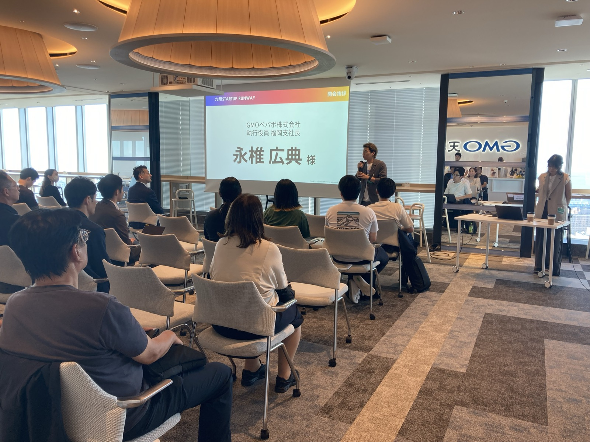
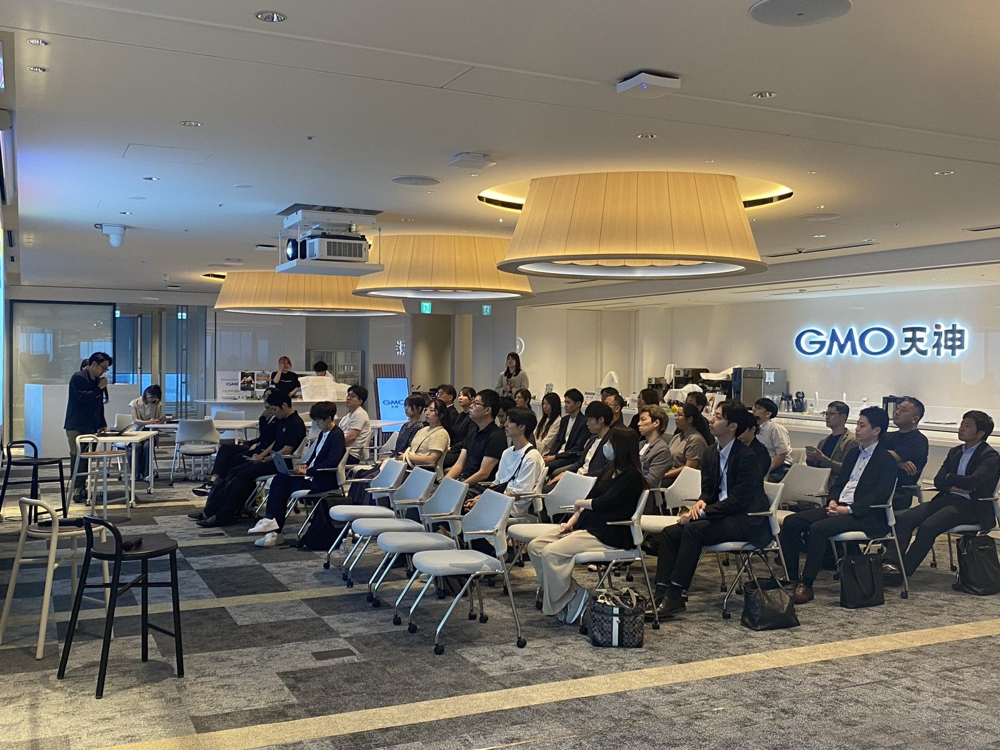
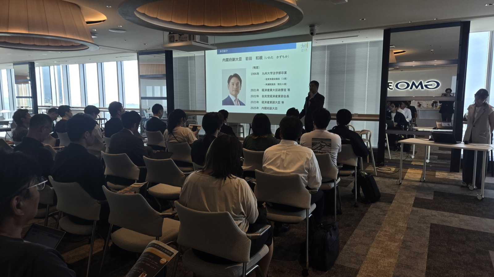
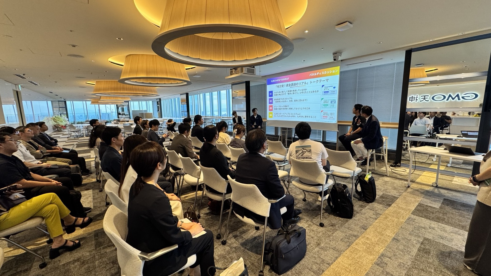
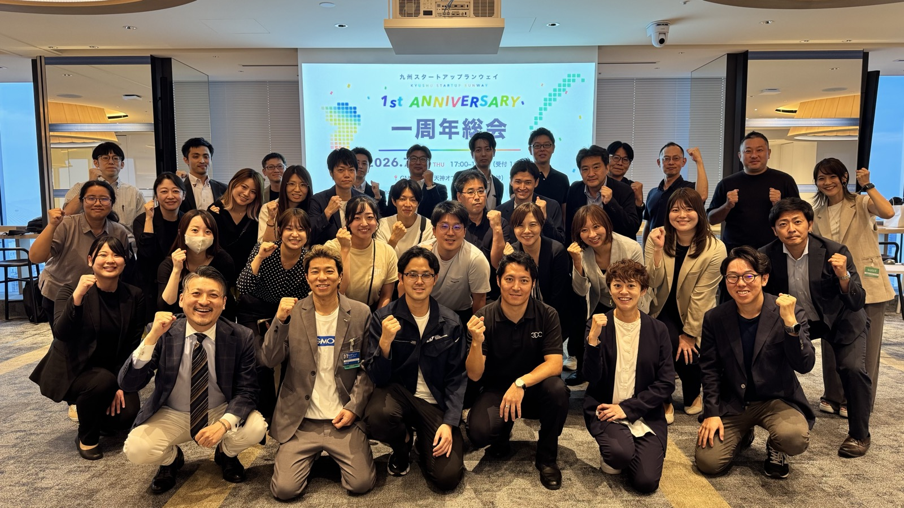

会場は、今年開所したばかりのGMO天神オフィス
会場を提供いただいたのは、GMOインターネットグループが今年4月に開所したばかりのグループ統合オフィス。「オフィスはビジネスの武器」という考えのもと、社内外の多くの人が集まり、交流から新たな価値を生み出す場として設計されています。
冒頭のご挨拶では、「私たち自身も20年前に福岡で創業し、小さなところから失敗と挑戦を重ねて今に至っている。その経験とサービスで、九州のスタートアップの成長に貢献したい」という温かいメッセージをいただきました。

全国に広がったスタートアップランウェイ
続いて、全国のスタートアップランウェイを推進するサムライインキュベートより、全国での取り組みが紹介されました。今年、北陸・関西にも拠点が生まれ、ランウェイのネットワークはついに日本全体をカバー。各地域の会員同士をつなぐ動きが本格化しており、「地域の中だけで完結せず、地域と地域をつなぐことで、支援の可能性はまだまだ広がる」と語られました。
SESSION 1九州SR 1年間の軌跡
昨年5月、熊本でのキックオフから走り出した九州SR。当初は加盟のお願いに回っても断られることが少なくなかったそうですが、1年間で加盟団体は50を超える規模に拡大しました。
九州SRならではの特徴が、韓国・台湾のVC・CVCにも加盟いただいている点です。アジアに近い福岡だからこそ、日本のスタートアップが海外に踏み出す足がかりになりたい——他地域のランウェイにはない独自の取り組みです。
この1年で特に手応えがあったのは、幹事による個別の紹介・マッチング。地域をまたいだ紹介から実際に投資が実現した事例も生まれ、「九州の中だけでなく、全国のランウェイの枠組みを使えば、投資先のバリューアップにもっとつなげられる」という確信が得られた1年でした。
一方で、問い合わせフォーム経由のマッチングには改善の余地があることも率直に共有されました。リード投資家の有無を事前に分かるようにする、起業家向けのファイナンス勉強会でリテラシーを底上げする、といった具体的な改善策が示されています。

スタートアップ金融の新しい選択肢「企業価値担保権」
特別講演には、金融担当副大臣・岩田和親氏にご登壇いただく予定でしたが、公務のため急遽ご欠席となり、金融庁監督局の大城健司氏に代理でご講演いただきました。
テーマは、今年5月に施行されたばかりの新制度「企業価値担保権」。不動産などの個別資産ではなく、技術・顧客基盤・チームといった無形の価値も含めた「事業の将来性」に着目して融資を行いやすくする制度です。
「スタートアップの価値は、土地や倉庫ではなく、目に見えないものの中にこそある。担保となる資産を多く持たなくても、事業の将来性を説明し、評価してもらえれば資金調達の道が開ける——そういう環境に変えていくための重要な一歩」 ——大城 健司 氏（金融庁監督局）
会場からは制度の実務に関する質問が相次ぎ、関心の高さがうかがえました。エクイティ（出資）とデット（融資）を組み合わせて成長を加速させる米国の事例も紹介され、九州のスタートアップ金融の裾野を広げるヒントが詰まった講演となりました。

地方発資金調達のリアル 〜3社累計60億円超の舞台裏〜
後半は、九州にゆかりのある3社の経営者をお迎えしたトークセッション。モデレーターはサムライインキュベートの渡邊真之助氏が務めました。
東北大発・次世代カーボン素材「グラフェンメソスポンジ」
シリーズA・累計約56.5億円
福岡拠点・再エネ発電/蓄電池オーケストレーション
プレシリーズA・累計約7億円
九州工業大学発・宇宙スタートアップ
シード・約6,000万円（2026年2月）
3社の累計調達額は合わせて60億円超。華やかな数字の裏側にある、リアルな試行錯誤が語られました。
「なぜ九州か」——それぞれの答え
再エネの先進地域だからこそ課題解決の最前線に立てる（Tensor Energy）、半導体をはじめ製造業の集積とものづくりネットワークが近くにある（Kick Space）——地方に根ざすことが、事業の強みに直結しているという話が印象的でした。
資金調達の舞台裏——本音のエピソード
「一度断られたエンジェル投資家に、想いを綴った長文の"魂の手紙"を送ったら即決してもらえた」 ——佐藤 凜 氏（Kick Space Technologies）
「投資家の『リードが決まったら連絡ください』は、起業家側からするとつらい言葉」 ——黒田 拓馬 氏（3DC）
「大企業との連携はタイミングと出会いが全て。断られても翌月また行く。ただし必ずお土産（新しい情報）を持って」 ——堀 菜々 氏（Tensor Energy）
会場の起業家・投資家双方に刺さる学びが共有されたセッションとなりました。

2年目方針：会員同士の「紹介」をもっと増やす
最後に、事務局より2年目のロードマップを発表しました。柱は3つです。
おわりに
総会の後は交流会へ。登壇者を囲んで、会員同士の名刺交換や情報交換が閉会まで続きました。
数名の想いから始まった九州SRは、1年で九州のスタートアップエコシステムに欠かせないネットワークに育ちつつあります。2年目は「つなぐ」をさらに深化させる1年に。今後の九州SRの活動に、ぜひご注目ください。
